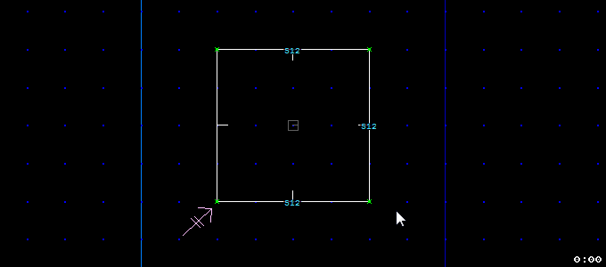
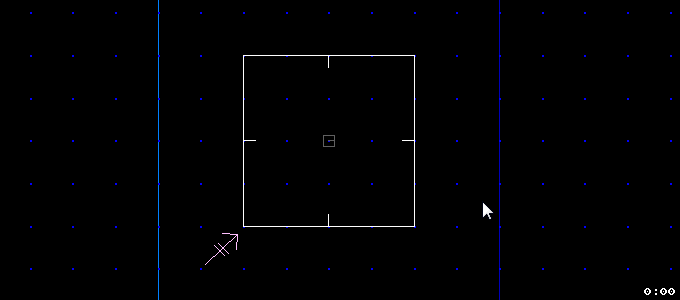
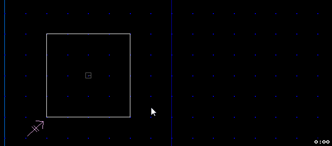
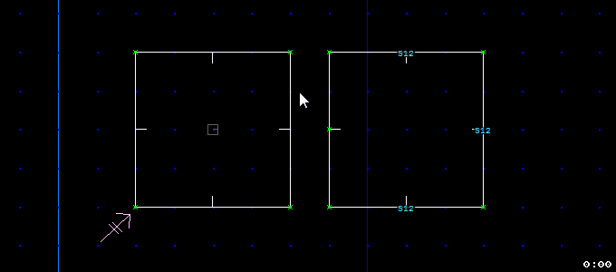
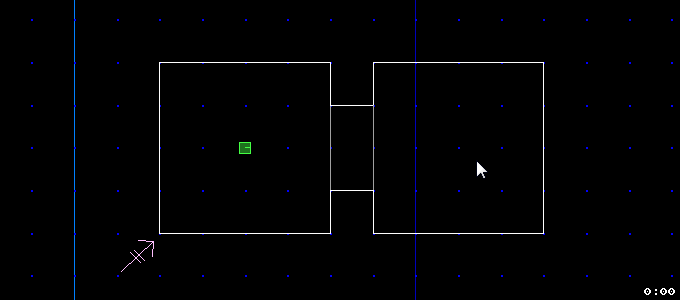
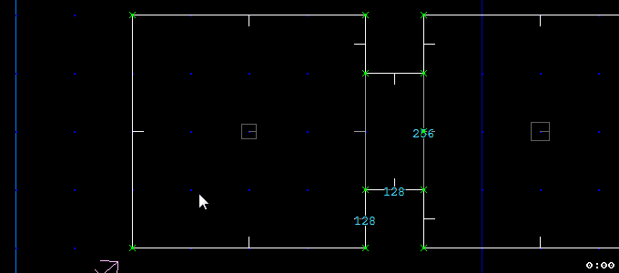
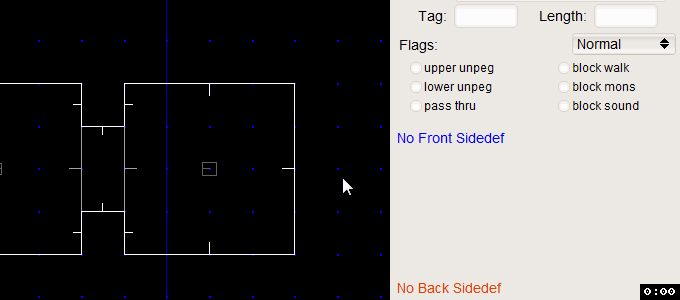
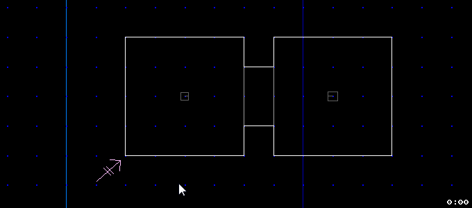
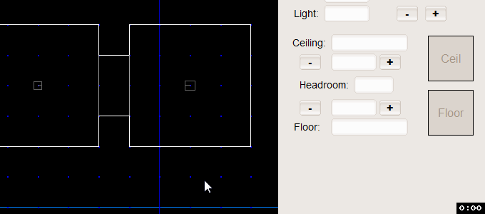
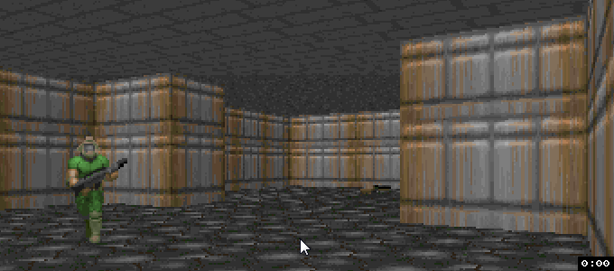

Начну с предисловия. Что же такое Doom. Это ум, честь и совесть нашей с вами эпохи. Подумать только - 1993-й год, когда вышел первый эпизод. Целых 22 года прошло с тех славных пор. И что же мы видим, разве он сдулся, потух или забыт всеми и заброшен? А вот нифига подобного, как говориться - "не дождётесь". Третий doom был во многом спорный, но это была технологичная, качественная и серьёзная игра. И до сих пор, если хотите пощекотать нервишки - то это хороший выбор. И всё таки Doom1-2 и Doom3 - по большому счёту разные.
Эх, как сейчас помню - 2005-й год, у меня появился свой первый комп, 133-й пень, остальная начинка ему под стать. Слыхом я не слыхивал про Half-life2 и Doom3 и Quake4. И в Doom2 я играл на одной только клаве, хотя мышка и валялась рядом, и без звука. Вообщем нуб нубом, хе-хе.
Ну вернёмся к сегодняшнему дню. Вышедшие 4 "mast play"-ных части: Doom, Doom2, Plutonia, TNT Evilution плюс куча редакторов карт, породили столько модов, одиночных, coop- и dm- карт, что диву даёшься. Не могу не упомянуть мод BrutalDoom, добавляющий в игру такого драйва, какого нет и в некоторых теперешних играх AAA класса. Опять же огромный плюс - это гениальная простота. Создать новый уровень, может практически любой человек. Возможно ты и не гениальный геймдизайнер, но попытаться всё-таки стоит. Многие теперешние мастера начинали с карт для "дума".
Как же обстоит дело с редакторами Doom на теперешний момент. Во-первых это DoomBuilder - очень уважаемая в широких кругах весчь. Как говорится, хочешь сделать в Doom-е что-нибудь хорошее - ставь ДумБилдер и будет тебе щастье. Во-вторых Slade, многими отмечаемая как достойная прога, этакий комбайн, совмещающий в себе редактор уровней и ресурсов игры.
Ну и третья по счёту программа - Eureka (Эврика). Работает сразу, как говориться "искаробки", не требует установки в систему(portable-версия), дополнительных библиотек("всё своё ношу с собой"), кроссплатформенная(есть она и под Windows, MacOS, Linux и для FreeBSD). Для новичка - это самое то, набравшись опыта здесь, можно переходить к прогам выше, которые посложнее и позволяют уровни строить поизощрённее.
Итак, скачиваем архив, распаковываем. На руках уже нужно иметь файлы doom.wad или doom2.wad, из них прога будет брать ресурсы для постройки уровней, их кидаем в папку к программе. Запустить можно кликнув по exe-шнику.
При первом запуске возможно автоматически найдётся тот самый ресурсный wad, который мы кинули в папку, а если нет всё равно идём вFile->New Project (или Ctrl+N) и в строке Game IWAD ищем, указывая путь к нему - Find. Ниже выбираем порт Doom, под который будем делать карту, к сожалению здесь нет gzdoom или zdoom. Но ничего страшного, выберем по умолчанию -boom , а при использовании actions(экшенов), о которых речь пойдёт дальше, не использовать те, которые помечены меткой BOOM. Тогда наша мапа подойдёт ко всем портам. Дальше можно подключить дополнительные ресурс-файлы, если они есть. Жмём Use и придумываем название для нашего wad-а(main).
Наша первая карта автоматически создалась и заменила первую по счёту карту оригинала. Когда потом, мы запустим её в том же gzdoom для тестирования, то начнём игру с нашей мапы, а второй уровень будет - вторая карта оригинала. И так, постепенно, мы сможем заменить все 32 уровня.
В Эврике есть 4 режима редактирования. Первый - Things Mod (t), позволяет расставлять по уровню монстров, оружие, декорации и т.д. Второй - Vertex Mod (v), в нём мы оперируем точками(vertex), которые при соединении дают линии(linedefs), из которых мы построим замкнутый сектор(sectors). Соответственно следующие режимы так и называются: Linedefs Mod (l) и Sectors Mod (s).
В главном окне мы видим квадрат - это начальная комната, вид сверху. Чтобы посмотреть как она выглядит жмём Tab и мы - в 3D-режиме , управление такое же как в игре: кнопки(WASD или стрелки) и дополнительно: колесо мыши - вперёд-назад, зажав правую кнопку мыши(ПКМ): вправо-влево - осмотреться по сторонам, вверх-вниз - подлететь к потолку-полу.
Начнём редактировать, чтобы сделать комнату побольше, переходим в режим точек(v), выделяем мышкой нужную и тащим в нужное место.

То же самое можно сделать в режиме линий(l).

Создадим рядом вторую комнату с помощью режима секторов(s). Рядом с первым добавляем маленький сектор(Пробел, удалить - Delete), зажимаем Shift , потом зажимаем СКМ и ведём немного в сторону, регулируя размер сектора.

Созадим проход из одной комнаты в другую. В режиме вершин, добавим точки как показано.

Перейдём в режим вещей(t), внутри одной из комнат стоит наш герой - зелёный кубик. Зелёным цветом также обозначаются аптечки, броня, красным соответственно враги, а всё остальное - всякими нейтральными цветами. Можно что-нибудь добавить(Пробел). При этом в боковой панели(которую можно откр./закр. кнопкой b b ), выбираем что нужно. Расставьте по уровню оружие, монстров полегче, бочки(куда же без них).

Теперь, в 3D-режиме можно пройтись по нашему мини-уровню из 2-х комнат. Не забудьте сохранить его(Ctrl+s). Можно включить гравитацию, чтобы не очень летать. Теперь нужно немного рассказать о рассмотренных режимах.
Точки или вершины(vertex), понятное дело принадлежат какой-то прямой, сама по себе точка никак не видна. Она является границей между двумя линиями. При добавлении каждой новой вершины, при этом, если выделена и предыдущая, то рисуется линия. Этот режим требуется, когда нужно точно разместить один объект относительно другого. В этом помогает коориднатная сетка, которую можно уменьшить/увеличить(g, Shift+g или 1,..,9). Для удобства между некоторыми вершинами указаны расстояния, а также все точки посчитаны. Их номер можно увидеть, выделив точку и посмотрев на панель инструментов(самая крайняя справа), на верхний цветной прямоуголник. Там указан её № и общее количество(нумерация с 0). А так же можно отобразить/скрыть прямо на карте, нажимая(Shift+j). При выборе 2-х и более точек(так же линий или секторов), этот прямоугольник сигнализирует красным цветом, что всё, что вы делаете дальше будет касаться не одной точки, а нескольких(Будьте внимательны!).

Линию или точнее плоскость с видом сверху(linedef), добавить уже нельзя, можно только переместить готовую, изменить размер(зажать Shift и ПКМ), повернуть(зажать Ctrl и ПКМ), но как правило легче манипулировать ей с помощью точек. Но линия важна тем, что у неё есть две поверхности - передняя(front), которая всегда обращена к игроку и с которой он может взаимодействовать, обозначена чёрточкой посередине(нажать кнопку на стене, например), и задняя(back), которая обычно не видна(обычно, но не всегда). Соответственно на поверхности размещается текстура. Выделите какую-нибудь крайнюю линию слева. На панели инструментов(ПИ) видна front-текстура(кликнув на неё, можно выбрать из появившегося списка) и её название; длина линии(length); кнопки add и del (для добавления/удаления текстур); окошки координат X Y , для смещения текстуры; окошко sec , принадлежность к сектору.

Последнее важно, линии между соседними секторами, как правило имеют двух "хозяев", одна сторона, принадлежит одному, другая - другому. Это правило надо соблюдать, если по каким-то причинам чтото напутается, в этом окошке напрямую можно задать нужные сектора и исправить ситуацию. Если выделить ту самую линию, между большим и малым сектором, на ПИ мы всё это и увидим. Но почему текстур так много, не одна-две, а четыре? Сейчас всё объясню.
Наконец, режим секторов(sectors). Одно из важных требований к сектору - он должен быть замкнутый, какой бы многоугольник вы не постороили со всех сторон он должен быть закрыт, иначе появляются всякие трудноуловимые ошибки. При выделении сектора чёрточки всех линий смотрят внутрь(это может не совпадать с лицевыми сторонами linedef).

Так же у секторов тоже есть текстуры, но только потолка(ceil) и пола(floor), боковыми текстурами заведуют linedefs, как мы уже знаем. Выделив сектор, на ПИ видны те самые текстуры и их названия; окошко light - освещённость в секторе, можем изменять, нажимая + и -; высота соответственно пола и потолка(над уровнем моря :), так же изменяемая(+ и - на ПИ, кнопки б и ю - для пола, х и ъ - для потолка); итоговая высота сектора(headroom).

При клике на изображение пола/потолка, открывается боковая панель(БП), где можно выбрать подходящую текстуру или выбрать в выпадающем списке(Category) нужную категорию текстур(адская, городская, и др.), можно воспользоваться удобным поиском(Match). Для потолка можно выбрать специальную текстуру неба - SKY. И ещё, кликнув на текстуру потолка, вокруг появится красная рамка, если выделите и пол, и выберете нужную текстуру, она изменится и у пола и у потолка(То же самое с текстурами для linedefs - Будьте внимательны!).
Вернёмся к тому, что говорили про текстуры для стен(почему для одной стены их более 2-х). Выберите средний малый сектор и уменьшите высоту потолка и увеличьте для пола. Перейдите в 3D-режим и вы увидите те самые текстуры. Текстура сверху, отсутствие её посередине(дырка) и текстура снизу. Чтобы понять какая из них как обозначается в ПИ, перейдём в режим линий. Первая - низ(lower), вторая - середина(rail), третья по счёту - верх(upper).

Текстуры для изнаночной стороны можо удалить, для экономии памяти :), двойным кликом выделяем название в окошке и печатаем минус.
На этом первый урок можно закончить. Прилагаю в конце .txt-файл с shortcuts(клавиатурными сокращениями), желательно их знать. Потренируйтесь с простенькими уровнями, без лесниц, дверей, лифтов и прочих ништяков. Расставляйте монстров, оружие и декорации.
Eureka - редактор карт Doom.
Eureka shortcuts - клавиатурные сокращения.
Статья создана с помощью:LICEcap - программы для записи GIF-ок с экрана монитора(227Kb).